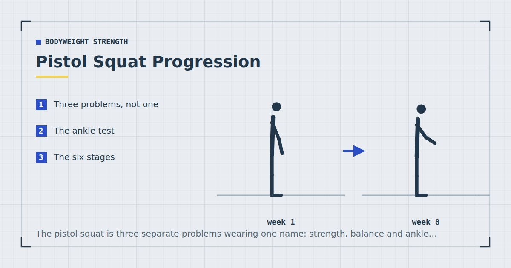

Bodyweight Strength
Pistol Squat Progression: A Realistic 12-Week Path
The pistol squat is three separate problems wearing one name: strength, balance and ankle range. Most people train the first and stall on the third.

A pistol squat is a full-depth squat on one leg with the other extended in front. It is the endpoint of bodyweight lower-body training and one of the more misleading goals in home fitness, because most people train it as a strength exercise when their actual limitation is somewhere else entirely.
Three problems, not one
Strength. You need to be able to produce enough force through one leg to stand up from a deep position. This is the part everyone trains.
Balance. You are on one foot with your centre of mass moving through a large range, with an extended leg acting as a counterweight. This improves with practice fairly quickly.
Ankle dorsiflexion. To keep your heel down at the bottom, your shin has to travel a long way forward over your foot. This is the constraint that stops most people, it improves slowly, and it is the one almost no progression guide mentions.
If your heel lifts at the bottom, no amount of split squats will fix it. You are training the wrong thing.
The ankle test
Kneel with one foot flat on the floor in front of you. Without letting the heel lift, push the knee forward past the toes as far as it will go, and measure how far the big toe is from the wall when the knee just touches it.
Roughly ten centimetres or more is comfortable for a pistol squat. Around five is workable with a heel elevation. Under five and you will need to spend time on ankle range before the movement becomes available, or accept doing it with a small heel lift permanently — which is a legitimate choice rather than a failure.
To improve it: from that same kneeling position, drive the knee forward over the toes and hold for two seconds, twenty repetitions per side, most days. Progress here is measured in months. There is a broader sequence in the mobility routine for people who sit all day.
Standing with your heel on a book about an inch thick removes most of the ankle demand. If your goal is single-leg strength rather than the pistol squat specifically, use the heel elevation permanently and get on with training. Weightlifting shoes exist for exactly this reason.
The six stages
Stage 1 — Assisted squat to a chair. Stand on one leg in front of a chair, lower under control until you sit, stand back up using only that leg. Use your hands on a doorframe for as much help as needed. Build to three sets of eight per leg.
Stage 2 — Box squat to a lower surface. Same movement to a progressively lower surface — chair, then a stack of books, then a low step. Each reduction is a real progression. Three sets of eight per leg at each height.
Stage 3 — Assisted full-depth pistol. Full range, holding a doorframe or a suspended towel with one or both hands, using as little assistance as you can. Three sets of five per leg.
Stage 4 — Negatives. Lower slowly on one leg over four to five seconds to the bottom, then use both legs or your hands to stand. Three sets of five per leg. This is where most of the strength is built.
Stage 5 — Elevated pistol. Stand on a raised surface so the non-working leg can hang below rather than being held out in front. This removes much of the balance and hamstring flexibility demand while keeping the strength requirement. Three sets of five per leg.
Stage 6 — Full pistol squat. Three sets of three, then build repetitions from there.
A twelve-week schedule
| Weeks | Main work | Alongside |
|---|---|---|
| 1–3 | Stage 1–2, twice weekly | Daily ankle work; Bulgarian split squats |
| 4–6 | Stage 2 to lower surfaces | Daily ankle work; split squats |
| 7–9 | Stages 3 and 4 | Ankle work; reduce split squat volume |
| 10–12 | Stages 5 and 6 | Ankle work; maintain other leg training |
Twelve weeks is achievable if you start with reasonable leg strength and adequate ankle range. If you are starting from neither, six months is more realistic and there is nothing wrong with that.
Train it twice a week, at the start of a lower-body session while fresh. Skill and balance work belongs before fatigue, for the reasons in how to structure a home workout.
Keep doing Bulgarian split squats alongside. They build the raw single-leg strength that the pistol requires, with far less technical demand, and they remain the better exercise for leg development regardless of whether you reach a pistol.
Where people stall
Heel lifts at the bottom. Ankle range. Elevate the heel and continue, or accept a longer timeline.
You fall backward. Usually the extended leg is not far enough forward, or you are not leaning your torso forward enough. Both are counterweight problems rather than strength problems. Holding a light object in your hands out in front helps more than it should.
You can lower but not stand. Pure strength. More negatives and more split squats.
Knee discomfort. Stop. The pistol places substantial load on one knee through a very deep range, and it is not an exercise to push through discomfort on. Persistent knee pain warrants a physiotherapist rather than a technique adjustment.
Is it worth pursuing?
As a leg-building exercise, honestly, no. A Bulgarian split squat with a slow descent and a pause is a better hypertrophy stimulus, easier to progress, and far less limited by mobility and balance. If your goal is stronger, bigger legs, spend the time there instead — the full case is in training legs at home without equipment.
As a goal in itself, it is a good one. It is a clear, binary, satisfying target that requires you to address mobility you would otherwise neglect, and the training that gets you there is genuinely useful. Evidence on light loads taken close to failure suggests bodyweight work of this kind produces real adaptation,1 so the training is not wasted regardless.
Just be clear which reason you are doing it for, and do not skip your ordinary leg training in favour of chasing it.
Where to go next
Build the underlying strength with Bulgarian split squats at home. For the ladders across every movement pattern, see bodyweight exercise progressions.
Frequently asked questions
How long does it take to learn a pistol squat?
Twelve weeks if you start with reasonable single-leg strength and adequate ankle range. Six months or more is realistic from a lower base. The ankle mobility component improves slowly and is usually the limiting factor.
Why do my heels lift during a pistol squat?
Limited ankle dorsiflexion — your shin cannot travel far enough forward over your foot. No amount of strength work fixes this. Either spend months on ankle mobility, or elevate the heel on a book about an inch thick and continue.
What is the best pistol squat progression?
Assisted squats to a chair, then to progressively lower surfaces, then assisted full-depth pistols holding a doorframe, then slow negatives, then elevated pistols with the free leg hanging, then the full movement.
Are pistol squats good for building leg muscle?
Less good than Bulgarian split squats, which provide a comparable strength stimulus with far less technical, balance and mobility demand. Pursue pistols as a skill goal rather than as your primary leg-building exercise.
Why do I fall backwards doing pistol squats?
Usually a counterweight problem rather than a strength one. Extend the free leg further forward and lean the torso further forward. Holding a light object out in front of you helps considerably.
Are pistol squats bad for your knees?
They place substantial load on one knee through a very deep range. That is not inherently harmful for healthy knees progressed sensibly, but it is not an exercise to push through discomfort on. Stop if you feel knee pain and seek advice.
Sources and further reading
- Schoenfeld BJ, Grgic J, Ogborn D, Krieger JW. “Strength and Hypertrophy Adaptations Between Low- vs. High-Load Resistance Training: A Systematic Review and Meta-analysis.” Journal of Strength and Conditioning Research, 2017;31(12):3508–3523. PubMed.
- Vieira AF, Umpierre D, Teodoro JL, et al. “Effects of Resistance Training Performed to Failure or Not to Failure on Muscle Strength, Hypertrophy, and Power Output: A Systematic Review With Meta-Analysis.” Journal of Strength and Conditioning Research, 2021. PubMed.
- NHS. Strength and Flex exercise plan.
- MedlinePlus, U.S. National Library of Medicine. Exercise and Physical Fitness.
Comments
Comments are not enabled yet. Add a hosted comment embed (Disqus, Commento, Giscus) inside this container when you are ready.